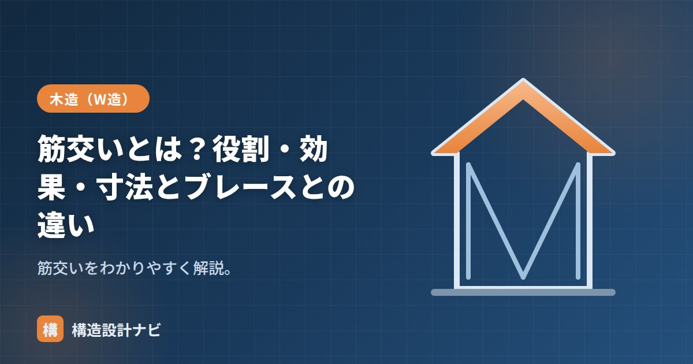

筋交いとは？役割・効果・寸法とブレースとの違い

筋交い（すじかい）とは、木造の柱と柱の間に斜めに入れる部材のことです。地震・風による水平力に抵抗する耐力壁の要となる部材で、英語では diagonal brace と呼ばれます。筋交いを適切な位置・向きにバランスよく配置することで、建物の変形を抑え、倒壊を防ぐ効果が期待できます。
- 筋交いは軸組を三角形化し、水平力に抵抗する斜材
- 寸法が大きいほど壁倍率が高く、たすき掛けで約2倍になる
- 欠き込み厳禁・金物での緊結が必須で、鉄骨のブレースとは性質が異なる
役割と効果
四角い軸組（柱・梁）は、水平力を受けると平行四辺形に変形しやすい構造です。筋交いを入れて三角形にすることで変形を防ぎ、建物が倒れないように支えます。これが耐力壁の働きです。三角形は形が変わりにくいトラスの基本形であり、斜め材を1本加えるだけで軸組全体の剛性と強度が大きく高まります。
筋交いが負担する力には、材が突っ張って踏ん張る圧縮力と、材が引き伸ばされる方向に働く引張力があります。細い筋交いを圧縮材として使うと、途中で横に膨らむように曲がる座屈（ざくつ）を起こすおそれがあるため、断面寸法や金物の選定には注意が必要です。
筋交いの種類と向き
入れ方によって呼び方が変わります。1本だけ斜めに入れるものを片筋かい、2本を交差させて入れるものをたすき掛け（両筋かい）と呼びます。片筋かいは地震の向きによって圧縮側になるか引張側になるかが変わるため、開口部の配置や通し柱・管柱の位置とあわせて向きを検討します。
寸法と壁倍率
筋交いの寸法が大きいほど強く、壁倍率が大きくなります（目安）。
| 筋かい | 壁倍率（目安） |
|---|---|
| 15×90 木材 | 1.0 |
| 30×90 木材 | 1.5 |
| 45×90 木材 | 2.0 |
| 90×90 木材 | 3.0 |
2本を交差させるたすき掛けにすると、片筋かいの約2倍の倍率になります。たとえば45×90mmの片筋かいなら壁倍率2.0ですが、同じ材をたすき掛けにすると壁倍率4.0の耐力壁として評価されます（数値は目安）。筋かいの端部は専用の金物で柱・土台に緊結します。
施工上の注意点
筋交いは耐力壁として働かせるため、欠き込み（切り欠き・穴あけ）を原則行いません。配管・配線を通すために筋交いを欠き込むと、断面欠損によって耐力が大きく低下するおそれがあり、建築基準法上も制限されています。また端部・中間部を所定の接合金物（筋かいプレートなど）で緊結しないと、壁倍率どおりの性能が発揮できません。
ブレースとの違い
| 筋交い | ブレース | |
|---|---|---|
| 主な構造 | 木造 | 鉄骨造 |
| 材料 | 木材 | 鋼材（丸鋼・山形鋼など） |
| 力の負担 | 圧縮・引張（種類による） | 主に引張（丸鋼） |
鉄骨造のブレースは、丸鋼やターンバックル付きの部材のように引張力だけを負担させる設計も多く見られます。これは細い鋼材が圧縮力を受けると座屈しやすいためです。一方、木造の筋交いは断面が比較的太いため、圧縮・引張の両方を負担させる設計が一般的です。
よくある質問
Q1. 筋交いは必ず入れないといけませんか？
木造軸組工法では、地震力・風圧力に対して必要な壁量を確保するため、筋交いや面材などの耐力壁を一定量以上、建物全体にバランスよく配置することが求められます。どの壁にも入れる、という決まりではありません。
Q2. 筋交いと合板の耐力壁はどちらが強いですか？
単純な強弱ではなく、それぞれの壁倍率で比較・評価します。合板などの面材耐力壁も告示で壁倍率が定められており、筋交いと組み合わせて使うこともできます。ただし同じ壁の両面に筋交いと面材を入れる場合の壁倍率の扱いには決まりがあるため注意が必要です。
配線・配管を通すために筋交いを欠き込んだ跡を、リフォーム現場の解体で何度も見てきた。新築時の検査では見えていても、後の改修で誰かが安易に切ってしまうことがあるため、図面に「欠き込み厳禁」と明記し施主にも伝わる形で残すようにしている。
「筋交いの鉄筋（鉄筋ブレース）」「壁倍率」「火打ち」をどうぞ。 ブレース接合部の設計は「保有耐力接合とブレース接合部の計算方法」をどうぞ。
筋交いが効くしくみ（図解）
配置の原則：バランスが最重要
| 原則 | 内容 | 守らないとどうなるか |
|---|---|---|
| ① 量を確保する | 必要壁量（建築基準法施行令46条）を満たす | 絶対的な耐力不足で倒壊 |
| ② 両方向に配置 | X方向・Y方向の両方に必要量を確保 | 片方向にだけ弱く、その向きの地震で崩れる |
| ③ 平面的にバランス | 4分割法または偏心率で確認 | 建物がねじれて壊れる |
| ④ たすき掛けを意識 | 片筋交いは向きを対にする | 押す向きと引く向きで耐力が違う |
| ⑤ 上下階で揃える | できるだけ同じ位置に耐力壁を配置 | 力の伝達が途切れ、その階に変形が集中 |
| ⑥ 接合部を確実に | 筋かいプレート・ホールダウン金物 | 筋交いが外れてまったく効かない |
とくに③のバランスは見落とされがちです。南側に大きな窓、北側に壁が多いという一般的な住宅の間取りは、そのままだと耐力壁が北に偏ります。地震のとき建物は壁の少ない南側が大きく動き、ねじれるように壊れます。総量が足りていても倒壊するのはこのパターンです。
壁倍率の加算と上限
構造用合板（壁倍率2.5）と筋交い（同2.0）を同じ壁に併用すると、壁倍率は2.5＋2.0＝4.5として扱えます。ただし加算後の上限は5.0と定められており、それ以上いくら重ねても評価されません。
これは、壁倍率が高くなるほど柱脚に生じる引き抜き力が大きくなり、接合部や基礎が先に壊れてしまうためです。壁の強さだけを追求しても、それを支える柱・土台・基礎が追いつかなければ意味がありません。
実務では、壁倍率5.0の壁を数か所つくるより、倍率2.5〜3.0の壁をバランスよく多く配置するほうが、接合部の負担が分散されて確実です。
まとめ
- 筋交いは木造の耐力壁の斜材。三角形にして水平力に抵抗する。
- 片筋かい・たすき掛けがあり、寸法が大きいほど壁倍率が大きい。たすき掛けで約2倍。
- 欠き込みは原則不可。端部は金物で緊結し、性能を確保する。
- 鉄骨のブレースは鋼材で主に引張を負担する点が異なる。